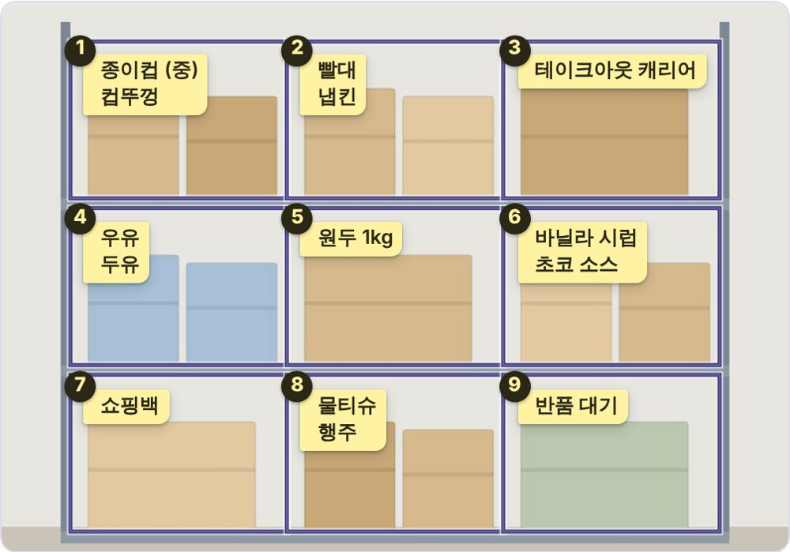
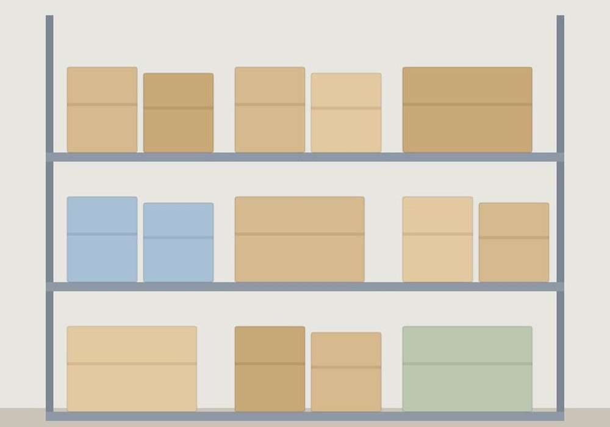

새 직원
“이거 어딨어요?”가 줄어요
검색 한 번이면 사진에서 그 칸이 빛나요. 앞 글자(ㅇㅅㅈ)나 말로도 찾고, "휴지"로 찾아도 냅킨이 나와요.
프린터는 멈췄고, 사장님은 자리에 없고. 선반 사진 한 장을 물건 지도로 바꿔 두면 직원이 혼자 찾아요.
결제 없음 · 가입 없음 · 사진은 내 폰에만


가운데를 밀어 보세요 · 같은 선반이에요
피크 타임에 흐름이 끊기고, 직원이 바뀔 때마다 같은 설명을 다시 해요. 위치는 사장님 머릿속에만 있으니까요.
틀린 칸은 손가락으로 끌어서 고쳐요.
"영수증 용지, 박스테이프, 포장 봉투" 하고 말하면 칸에 들어가요. 검색하면 그 칸이 빛나요.
직원이 묻기 전에 지도를 보고 찾아가요.

제일 와닿는 데서 눌러 보세요.
검색 한 번이면 사진에서 그 칸이 빛나요. 앞 글자(ㅇㅅㅈ)나 말로도 찾고, "휴지"로 찾아도 냅킨이 나와요.


결제 없음 · 가입 없음 · 사진은 내 폰에만
지금은 베타라 모든 기능이 무료예요. 결제 정보를 묻지 않아요.
사장님 폰 안에만 저장돼요. 'AI로 칸 나누기'를 누를 때만 그 사진이 칸을 찾는 서버에 잠깐 다녀와요.
링크로 바로 열려요. 자주 쓰시면 홈 화면에 추가해 앱처럼 쓸 수 있어요.
지도를 사진·PDF로 단톡방에 바로 보낼 수 있어요. 단톡방에 올려 두면 직원이 묻기 전에 지도를 보고 찾아가요. 링크로 같이 보는 기능도 준비하고 있어요.
혼자 만들고 있어요. 써 보시고 불편한 점은 앱의 설정 › 의견 보내기로 알려 주세요. 하나하나 읽고 고쳐요. · 창고여지도 열기